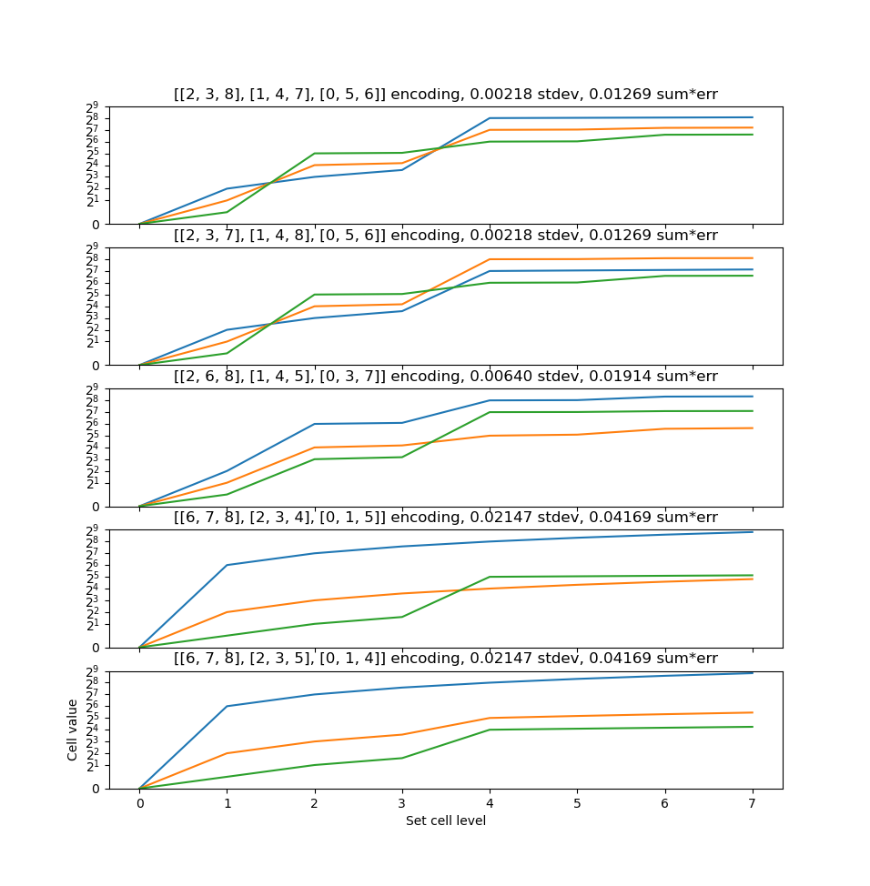
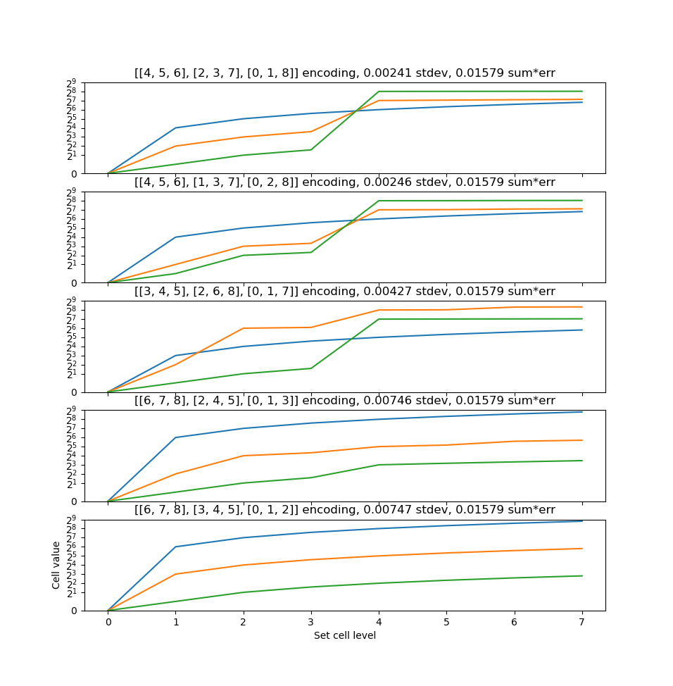

module steps_plot
Script for plotting different cell configurations
When called directly as main, it will create a pyplot showing the steps sizes between each threshold level in an encoded MLC value.
3 cells, 3 bits per cell, split-1 threshold distribution

3 cells, 3 bits per cell, uniform threshold distribution

This file was automatically generated via lazydocs.